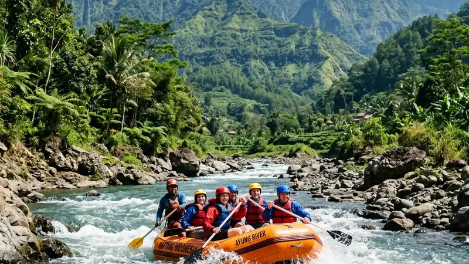

Arung jeram Batu Malang adalah aktivitas menyusuri sungai berarus menggunakan perahu karet di kawasan Batu dan Malang, populer sebagai wisata petualangan keluarga maupun kelompok. Kegiatan ini memadukan sensasi memacu adrenalin dengan keindahan alam pegunungan.
- Arung jeram Batu Malang memanfaatkan aliran sungai di kawasan pegunungan sekitar Batu dan Malang Raya.
- Aktivitas ini cocok untuk pemula maupun peserta berpengalaman, tergantung tingkat kesulitan rute yang dipilih.
- Operator profesional umumnya menyediakan perlengkapan keselamatan dan pemandu terlatih.
- Biaya dan paket bervariasi tergantung jarak tempuh, fasilitas, dan jumlah peserta.
- Persiapan fisik dan pemahaman prosedur keselamatan menjadi kunci pengalaman yang aman dan menyenangkan.
Apa Itu Arung Jeram Batu Malang?
Arung jeram Batu Malang adalah olahraga air yang dilakukan dengan menyusuri aliran sungai berarus menggunakan perahu karet berkapasitas beberapa orang, dipandu oleh instruktur berpengalaman.
Aktivitas ini memanfaatkan kontur sungai di dataran tinggi sekitar Batu dan Malang, yang secara umum memiliki karakter arus bervariasi dari tenang hingga menantang. Peserta duduk berjajar di dalam perahu karet, mengayuh bersama mengikuti instruksi pemandu untuk melewati jeram demi jeram.
Selain sebagai olahraga, arung jeram juga menjadi sarana rekreasi keluarga, kegiatan team building perusahaan, hingga acara komunitas. Suasana alam pegunungan yang masih asri menjadi nilai tambah tersendiri dari pengalaman ini.
Mengapa Batu Malang Menjadi Destinasi Arung Jeram Favorit?
Batu Malang menjadi destinasi arung jeram favorit karena memiliki aliran sungai dengan karakter alam pegunungan, udara sejuk, dan akses yang relatif mudah dijangkau dari pusat kota.
Kawasan Batu dan Malang Raya dikenal luas sebagai daerah wisata pegunungan dengan udara sejuk sepanjang tahun. Kondisi ini membuat aktivitas outdoor seperti arung jeram terasa lebih nyaman dibandingkan daerah dataran rendah yang cenderung panas.
Selain faktor iklim, kawasan ini juga memiliki banyak operator wisata air yang sudah berpengalaman melayani wisatawan domestik maupun mancanegara. Infrastruktur pendukung seperti akomodasi, kuliner, dan transportasi pun umumnya sudah tersedia dengan baik di sekitar lokasi wisata.
Faktor lain yang membuat kawasan ini diminati adalah kedekatannya dengan destinasi wisata lain di Batu dan Malang, sehingga wisatawan dapat menggabungkan agenda arung jeram dengan kunjungan ke tempat wisata lainnya dalam satu perjalanan.
Bagaimana Proses Arung Jeram Berlangsung?
Proses arung jeram umumnya dimulai dengan sesi briefing keselamatan, dilanjutkan pemasangan alat pengaman, lalu penyusuran sungai bersama pemandu hingga titik finish.
Berikut tahapan yang umum dilalui peserta:
- Registrasi dan pengecekan kondisi fisik peserta oleh pihak operator.
- Briefing keselamatan dan pengenalan teknik dasar mendayung.
- Pemasangan perlengkapan seperti pelampung, helm, dan dayung.
- Penyusuran sungai secara berkelompok dengan didampingi pemandu berpengalaman.
- Sesi istirahat di titik tertentu bila rute cukup panjang.
- Kembali ke titik akhir dan pengembalian perlengkapan.
Durasi keseluruhan aktivitas dapat bervariasi tergantung panjang rute yang dipilih, mulai dari rute pendek yang cocok untuk pemula hingga rute lebih panjang bagi peserta yang menginginkan tantangan lebih.
Apa Saja Manfaat Mengikuti Arung Jeram di Batu Malang?
Manfaat mengikuti arung jeram di Batu Malang meliputi manfaat fisik, mental, hingga sosial, karena aktivitas ini menggabungkan olahraga, relaksasi, dan interaksi kelompok.
Secara fisik, aktivitas mendayung dan menjaga keseimbangan tubuh selama arung jeram dapat melatih kekuatan otot lengan, punggung, dan inti tubuh. Secara mental, sensasi menantang arus sungai dapat membantu melepas penat dari rutinitas harian.
Dari sisi sosial, arung jeram sering menjadi ajang mempererat kebersamaan, baik bersama keluarga, teman, maupun rekan kerja, karena aktivitas ini menuntut kerja sama tim yang kompak untuk melewati setiap rintangan sungai.
Apa Saja Faktor yang Mempengaruhi Pengalaman Arung Jeram?
Faktor yang mempengaruhi pengalaman arung jeram meliputi kondisi cuaca, debit air sungai, tingkat kesulitan rute, serta kualitas perlengkapan dan pemandu yang digunakan.
Kondisi cuaca dan musim dapat memengaruhi debit air sungai, yang pada akhirnya berpengaruh terhadap tingkat tantangan arus yang dihadapi peserta. Pada musim tertentu, arus dapat lebih deras dibandingkan musim lainnya.
Pemilihan rute juga menjadi faktor penting. Rute dengan tingkat kesulitan rendah umumnya lebih cocok untuk pemula atau keluarga dengan anak-anak, sementara rute dengan jeram lebih menantang lebih sesuai untuk peserta berpengalaman.
Kualitas perlengkapan keselamatan seperti pelampung dan helm, serta kompetensi pemandu dalam membaca kondisi sungai, turut menentukan kenyamanan dan keamanan selama aktivitas berlangsung.
Apa Saja Kesalahan Umum yang Perlu Dihindari?
Kesalahan umum dalam arung jeram meliputi mengabaikan briefing keselamatan, tidak mengenakan perlengkapan dengan benar, dan memaksakan diri mengikuti rute yang tidak sesuai kemampuan.
Beberapa kesalahan yang sering terjadi antara lain:
- Tidak menyimak instruksi keselamatan dengan saksama sebelum memulai aktivitas.
- Melepas atau mengendurkan pelampung dan helm selama perjalanan.
- Membawa barang berharga tanpa pengamanan tambahan seperti kantong kedap air.
- Memilih rute dengan tingkat kesulitan tinggi tanpa pengalaman sebelumnya.
- Mengabaikan kondisi fisik pribadi, misalnya memaksakan diri saat kurang sehat.
Menghindari kesalahan-kesalahan tersebut dapat membantu peserta menikmati aktivitas dengan lebih aman dan nyaman.
Apa Saja Tips Persiapan Sebelum Mencoba Arung Jeram?
Tips persiapan sebelum arung jeram meliputi menjaga kondisi fisik, mengenakan pakaian yang sesuai, serta memilih operator yang memiliki standar keselamatan jelas.
Beberapa persiapan yang dapat dilakukan:
- Mengenakan pakaian yang cepat kering dan nyaman untuk bergerak.
- Membawa pakaian ganti dan alas kaki khusus air.
- Memastikan kondisi tubuh dalam keadaan sehat dan cukup istirahat.
- Menanyakan standar keselamatan dan pengalaman pemandu kepada operator.
- Mengikuti seluruh sesi briefing dengan saksama sebelum memulai aktivitas.
Persiapan yang matang dapat membuat pengalaman arung jeram menjadi lebih menyenangkan tanpa mengurangi aspek keselamatan.
Perbandingan Arung Jeram Batu Malang untuk Pemula dan Peserta Berpengalaman
Perbedaan utama antara rute untuk pemula dan peserta berpengalaman terletak pada tingkat kesulitan arus, panjang rute, dan teknik yang dibutuhkan selama penyusuran sungai.
Rute untuk pemula umumnya memiliki arus yang lebih tenang dan jarak tempuh lebih pendek, sehingga peserta dapat lebih fokus mempelajari teknik dasar. Sebaliknya, rute untuk peserta berpengalaman biasanya menawarkan jeram yang lebih menantang dan membutuhkan koordinasi tim yang lebih matang.
Pemilihan jenis rute sebaiknya disesuaikan dengan kondisi fisik, pengalaman, dan tujuan peserta mengikuti aktivitas ini, apakah untuk sekadar rekreasi santai atau mencari tantangan yang lebih memacu adrenalin.
FAQ
Apakah arung jeram Batu Malang aman untuk pemula?
Arung jeram Batu Malang secara umum aman untuk pemula selama mengikuti rute yang sesuai dan mematuhi arahan pemandu berpengalaman.
Berapa usia minimal untuk mengikuti arung jeram?
Usia minimal umumnya ditentukan oleh masing-masing operator dan dapat bervariasi tergantung tingkat kesulitan rute yang dipilih.
Apa saja perlengkapan yang perlu dibawa sendiri?
Peserta umumnya perlu membawa pakaian ganti, alas kaki khusus air, dan perlengkapan pribadi lain, sementara alat keselamatan utama biasanya disediakan operator.
Arya
penulis artikel yang sudah berpengalaman di dalam dunia wisata outbound Batu Malang.